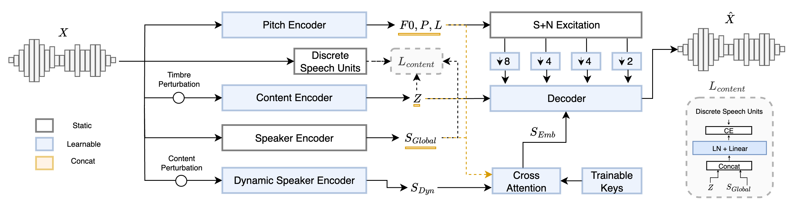

A Lightweight Real-Time Voice Conversion Framework [arXiv] [code]
With Improved Speaker Matching
Abstract
Recent advancements in speech generation and speech representation learning have facilitated the development of real-time, streamable voice conversion systems. While these systems achieve synthesis quality and linguistic consistency comparable to state-of-the-art offline models, they often fall short in maintaining speaker similarity, particularly for unseen speakers i.e. in zero-shot scenarios. In this work, we propose a novel real-time voice conversion pipeline designed to enhance target speaker matching. Our approach leverages dynamic speaker embeddings and speaker information disentanglement through information perturbation. Operating under low-latency and lightweight causal inference constraints, our model preserves input prosody and linguistic content. Experimental results, based on both objective and subjective evaluations, demonstrate improved speaker matching compared to existing solutions.
